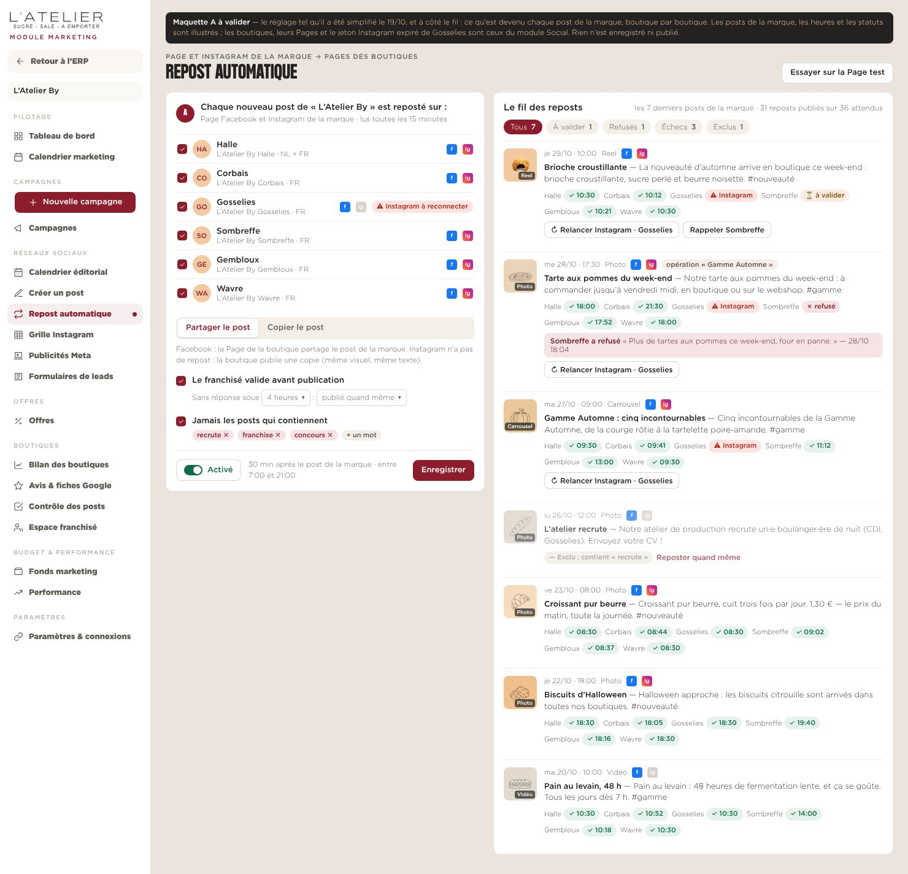
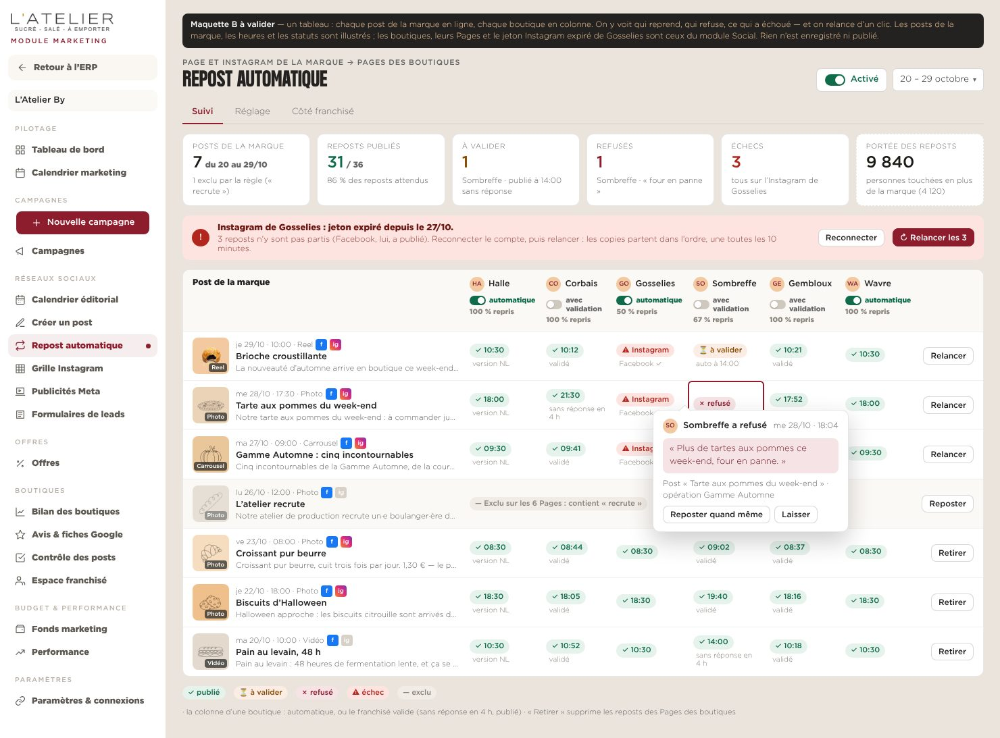
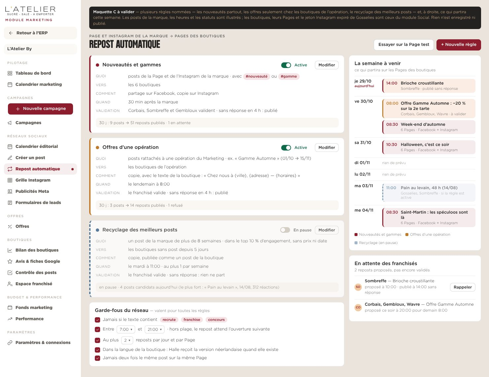

Marketing › Réseaux sociaux › Repost automatique
REPOST AUTOMATIQUE — TROIS MAQUETTES
Quand la marque publie sur sa Page Facebook ou son Instagram, le post est repris par les Pages des boutiques. La première maquette (19/10) réglait quoi reposter ; ces trois-là ajoutent la gestion : ce qui est parti, ce qui attend le franchisé, ce qui a été refusé ou a échoué, et ce qui partira. Même jeu de données dans les trois : 7 posts de la marque du 20 au 29/10, 6 boutiques du module Social.

A — Le réglage et le fil
Le bloc validé le 19/10, sans changement, et à côté le fil des 7 derniers posts de la marque avec, sous chacun, le statut dans chaque boutique.
Ce que ça apporte
- Rien de nouveau à apprendre : le réglage reste un seul bloc
- Chaque post se lit d’un coup d’œil, le refus du franchisé en clair
- Relancer un échec, rappeler un franchisé depuis le post
Limites
- Une seule règle pour tous les posts : pour en écarter un, seulement des mots
- Au-delà de 6 à 8 boutiques, les pastilles débordent

B — Le tableau posts × boutiques
Un onglet « Suivi » : six chiffres, l’alerte de connexion, puis un post par ligne et une boutique par colonne. Chaque colonne dit si la boutique est en automatique ou si son franchisé valide.
Ce que ça apporte
- On voit qui reprend, qui refuse, ce qui échoue — par boutique
- Le réglage boutique par boutique (automatique ou validé) vit dans l’en-tête de sa colonne
- Une panne de jeton se répare et se relance en deux clics
Limites
- Écran dense, pensé pour l’ordinateur
- Le réglage passe dans un second onglet

C — Les règles et la semaine à venir
Plusieurs règles nommées (nouveautés partout, offres seulement chez les boutiques de l’opération, recyclage des meilleurs posts) et leurs garde-fous communs ; à droite, ce qui partira cette semaine.
Ce que ça apporte
- Le bon post à la bonne boutique : une offre ne part que là où elle vaut
- On anticipe : la semaine à venir se lit avant qu’elle parte
- Le recyclage remplit les jours creux avec des posts qui ont déjà marché
Limites
- Plus de réglages, à expliquer aux franchisés
- Le suivi détaillé (B) reste à prévoir à côté
Dans les trois, ce que Meta impose
- Facebook : « partager » publie sur la Page de la boutique un lien vers le post de la marque (rendu à confirmer sur la Page test) ; « copier » publie le même visuel comme post de la boutique.
- Instagram n’a pas de repost par l’API : c’est toujours une copie (ou un post « collab » que la boutique accepte dans l’appli).
- Un jeton expiré bloque une Page sans bloquer les autres : d’où l’alerte et la relance.
Pour décider
- A si l’on veut aller vite : le réglage existe déjà, le fil s’ajoute à côté.
- B si le sujet est de savoir quelles boutiques jouent le jeu — et d’agir quand l’une décroche.
- C si les offres d’opération et le recyclage doivent partir tout seuls. B et C se combinent : C pour régler, B en onglet « Suivi ».